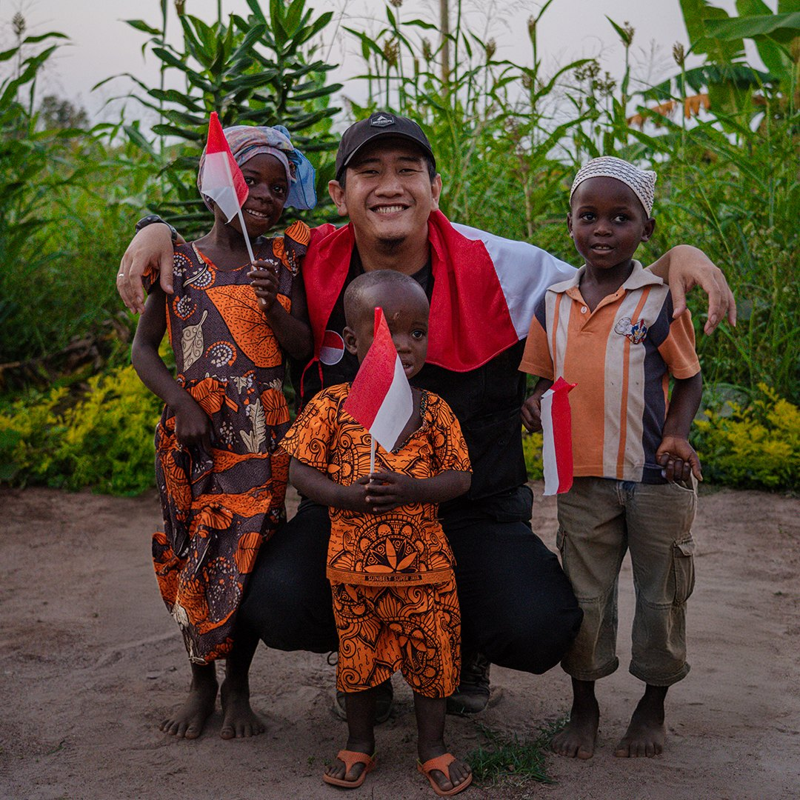
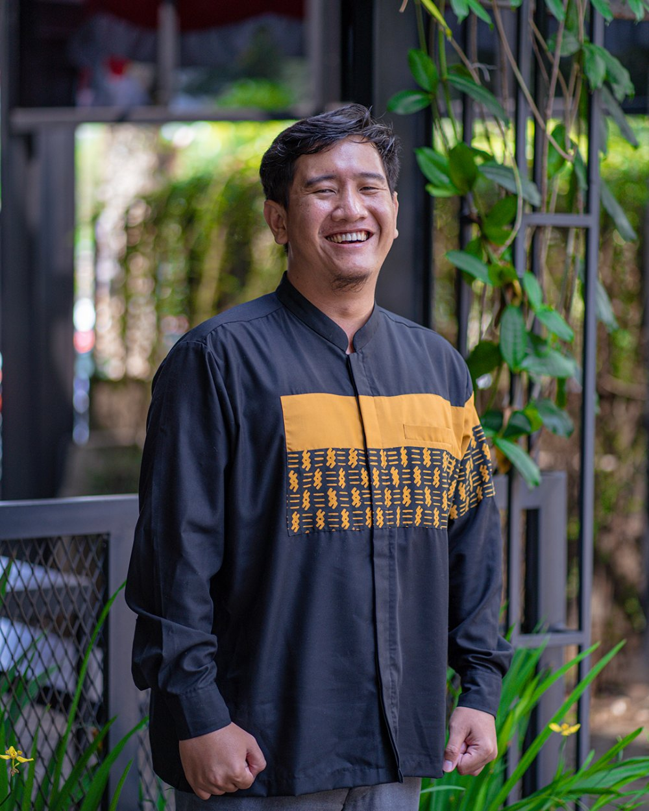

White Helmet Indonesia
Memproduksi konten kemanusiaan untuk media sosial dan penggalangan dana bersama White Helmets Indonesia, berfokus pada isu kemanusiaan besar di negara-negara terdampak konflik.
Halo, saya 👋
Humanitarian Activist Social Entrepreneur Certified Waqf Practitioner
Seorang humanitarian activist, social entrepreneur, dan Certified Waqf Practitioner dengan lebih dari satu dekade pengalaman dalam misi kemanusiaan, respons konflik dan bencana, serta membangun organisasi dan inisiatif sosial yang berdampak.


Beragam alat
Saya adalah seorang humanitarian activist, social entrepreneur, dan praktisi wakaf bersertifikat yang memiliki pengalaman hampir satu dekade dalam bidang media kemanusiaan, pengembangan organisasi sosial, penggalangan dana, serta pengembangan ekosistem dampak sosial Islam.
Perjalanan saya dimulai pada tahun 2016 sebagai praktisi media kemanusiaan yang berfokus pada isu-isu konflik di Suriah. Seiring waktu, peran tersebut berkembang menjadi pembangunan dan pengelolaan berbagai inisiatif sosial, platform media, serta organisasi kemanusiaan di Indonesia dengan orientasi pada keberlanjutan dan pemberdayaan.
Saya merupakan pendiri sejumlah inisiatif sosial dan media, di antaranya Indonesia Peduli, Amal Produktif, dan Muslim Press Network, yang berfokus pada penguatan media Islam, filantropi, gerakan sosial, serta pengembangan wakaf produktif yang berkelanjutan.
Keahlian profesional saya mencakup pembangunan dan kepemimpinan organisasi, pengembangan lembaga sosial dan kemanusiaan, pengelolaan wakaf produktif, strategi media dan digital fundraising, serta manajemen misi kemanusiaan lintas wilayah bencana dan konflik. Saya juga memiliki pengalaman langsung dalam pelaksanaan misi lapangan di lebih dari 20+ lokasi bencana dan konflik, baik di dalam maupun luar negeri.
Sebagai Certified Waqf Competence (CWC) dan Nazhir Wakaf resmi terdaftar, saya memiliki komitmen untuk mengembangkan model pengelolaan wakaf dan keuangan sosial Islam yang profesional, akuntabel, dan berkelanjutan.
Visi saya adalah membangun ekosistem media Islam dan institusi sosial yang independen, profesional, serta berorientasi pada dampak bermakna dan jangka panjang bagi komunitas Muslim di seluruh dunia.
Satu dekade membangun media independen, platform kemanusiaan, dan institusi wakaf — dari laporan garis depan pertama hingga organisasi wakaf produktif yang resmi terdaftar.
Memproduksi konten kemanusiaan untuk media sosial dan penggalangan dana bersama White Helmets Indonesia, berfokus pada isu kemanusiaan besar di negara-negara terdampak konflik.
Organisasi kemanusiaan yang digerakkan anak muda, aktif dalam misi lapangan ke wilayah terdampak konflik seperti Suriah, Palestina, Rohingya, dan Yaman.
Memimpin media sosial dan penggalangan dana sekaligus terlibat dalam misi lapangan kemanusiaan di Suriah, Yordania, dan Indonesia.
Mendirikan Indonesia Peduli, platform penggalangan dana untuk mendukung negara-negara terdampak perang dan krisis kemanusiaan.
Pendiri Amal Produktif — yang berawal sebagai platform fundraising digital dan kini berkembang menjadi Organisasi Nazhir Wakaf resmi.
Mendirikan perusahaan yang berfokus pada pengelolaan dana wakaf produktif (wakaf tunai) dari Organisasi Wakaf Amal Produktif.
Berdedikasi membangun kesadaran kolektif — tidak sekadar menyampaikan informasi, tetapi membentuk perspektif, memperkuat identitas, dan menumbuhkan semangat kemanusiaan.
Selama hampir satu dekade saya membangun media kemanusiaan, ekosistem wakaf, dan inisiatif dampak sosial — memimpin tim dan mengembangkan program berkelanjutan yang berakar pada kemanusiaan, filantropi Islam, kesadaran publik, strategi digital, serta pengalaman lapangan di wilayah konflik dan bencana.
Memimpin inisiatif kemanusiaan, media, dan sosial dengan tanggung jawab, visi jangka panjang, serta pengalaman lapangan langsung di wilayah konflik dan bencana.
Berkomitmen melayani dengan ketulusan, akuntabilitas, dan kepercayaan — membangun kerja kemanusiaan yang berakar pada nilai, transparansi, dan konsistensi.
Meyakini dampak yang bermakna lahir dari kolaborasi dan persaudaraan — bekerja bersama lintas komunitas, media, dan jejaring kemanusiaan.
Mengembangkan pendekatan kreatif untuk media kemanusiaan, fundraising, dan ekosistem wakaf dengan memadukan strategi digital, storytelling, dan dampak sosial.
Hubungan terpercaya dan kemitraan lapangan yang terjalin lintas benua — dari Asia Tenggara hingga Timur Tengah, Asia Selatan, dan Afrika.
Terbuka untuk kolaborasi, konsultasi, undangan berbicara, serta kemitraan kemanusiaan dan wakaf. Mari mulai percakapan.
Bercerita dari garis depan
Naratif kemanusiaan lintas platform — menjangkau jutaan orang melalui reels, laporan, dan dokumentasi lapangan.
Menghubungkan kebenaran ke dunia.
Platform media yang lahir dari garis depan — mendokumentasikan kisah kemanusiaan dari wilayah konflik dan bencana, serta membentuk kesadaran kolektif.